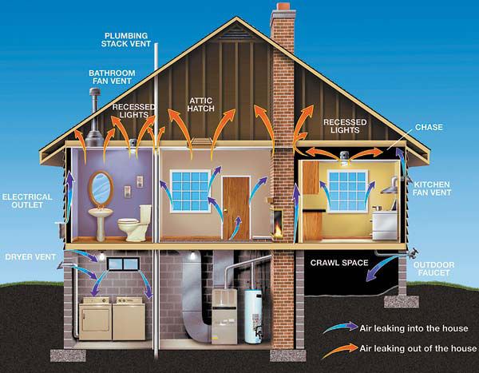

With winter approaching, energy-efficient homes look more appealing than ever. Houses that require less energy to heat have lower energy bills during the winter, so they are less affected by sudden spikes in heating prices. Because they consume less fossil fuel, energy-efficient homes also contribute less to global warming.
However, energy efficiency may come with a higher price tag - whether it’s a new home with the latest technology or an existing home remodeled with energy improvements, such as added insulation or a more efficient furnace. While most of these homes eventually pay for themselves through lower energy bills, they might be difficult to afford right now. But finding money for home energy improvements is getting easier because many lending institutions now offer mortgages designed to cover the cost of energy upgrades.
If you’re planning to take out a loan to buy a house or refinance an existing loan, consider an Energy Efficient Mortgage (EEM). These mortgages can increase your loan, either to help you purchase an energy-efficient new home or to pay for energy upgrades to an existing home. EEMs are available through many government-insured loan programs, and from conventional lenders. Energy Star, a government program that encourages energy efficiency, also is promoting these loans.
Brian Ng, the Energy Star for Homes finance coordinator, says EEMs have the potential to reduce a homeowner’s bills. “Say the energy improvements cost the homeowner an additional $20 a month in mortgage payment, but the improvements save $40 a month in utility bills. Thus, the improvements end up more than paying for themselves, the homeowner saves money and less energy is consumed,” Ng says.
To qualify for most EEMs, the home you’re purchasing needs a certified energy evaluation to confirm that it’s energy efficient or to identify specific cost-effective improvements that should be made. Ng says this process benefits home buyers. “They’re not only getting additional money to pay for improvements, they’re also getting assurance that the improvements actually will pay off in energy savings.”
Dave Hepfler, a building performance specialist in Eau Claire, Wis., says the home evaluation process is important because it helps pinpoint what would improve building performance.
“Working with a consultant may save you lots of time, effort and money,” Hepfler says. The improvements he frequently recommends include air sealing measures, additional insulation and energy-efficient furnaces, water heaters or air conditioners.
Hepfler is enthusiastic about EEMs. “I really feel this is a huge opportunity for first-time homeowners, because they’re usually looking at older buildings with myriad energy issues. We can offer ideas about what might benefit the building the most, and EEMs can make the money available.”
Some state or local programs offer incentives for home energy upgrades, so check what’s available in your area. Plus, energy-efficiency improvements during 2006 and 2007 are eligible for tax credits that start at $500. (See Get Cash Back for Energy Improvements.)
Energy Star
Find home energy raters, energy incentives and lenders offering Energy Efficient Mortgages (EEMs). Choose the page for new homes, then use the partner locater.
U.S. Department of Energy
More information on EEMs.
|
 ENERGY STAR With information from an energy audit, you may be able to qualify for a special mortgage that can finance energy improvements. |
|
|